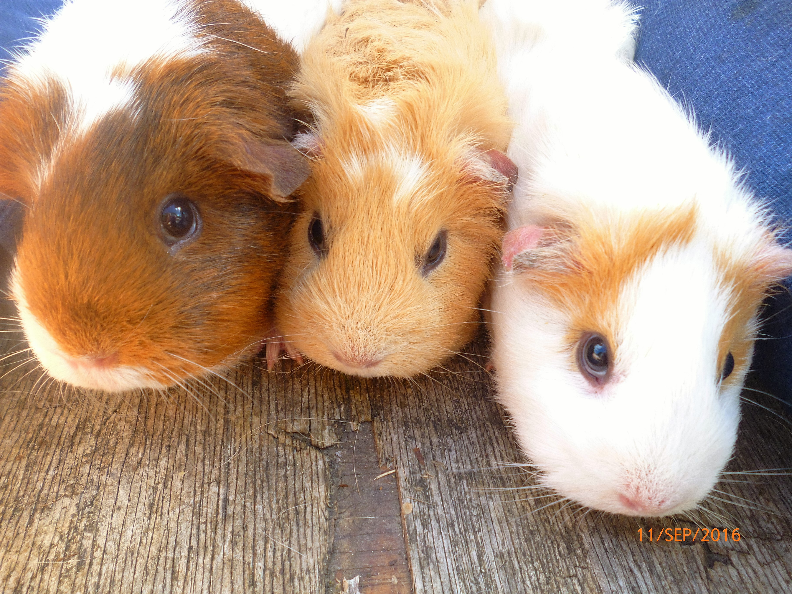

They are cute.
They want to help you! But... there is a large MUSHROOM!!!!!! He wants your ukelele strings! What can you do? You have to use the help from the guinea-pigs! But how do you earn thier trust?
You must find the magic carrot, the magic apple and the magic lettice leaf!
